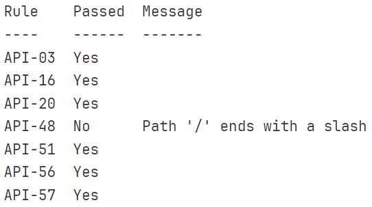

Additions to pygeoapi for Geonovum Tender
CRS and INSPIRE support - (Dutch) API Design Rules

Amersfoort, April 20, 2023
This presentation available at pygeoapi.io/presentations/geonovum-tender-2023
The tender doc is available at geonovum-tender-doc.pdf
Table of contents
- About pygeoapi
- Adding CRS support ("OAPIF Part 2")
- INSPIRE improvements
- Adherence to (Dutch) API Design rules
About pygeoapi
Project overview
 A Geopython project
A Geopython project- Created by Tom Kralidis in 2018 on Valentine's Day with ❤️
- OSGeo Project
Project Overview
- Geospatial data Web API framework via OGC API
- REST/JSON/OpenAPI/Swagger
- OGC Compliant
- OSGeo Project
- International team (Canada, Netherlands, Greece, Italy, New Zealand, United States, Spain)
- Numerous core contributors
- 21000 upstream contributors (dependencies)
Data Publishing
Leave data as-is
- Fits to the data (not the inverse)
- Proxy/wrap remote legacy services:
WFS, ESRI FS, WMS,...
New: leave projection as-is
(CRS support!)
Technical Overview
- Web framework agnostic (default Flask)
- YAML configuration
- OpenAPI document generation
- Plugin framework (data connectors, formats, ...)
- Easy deploy (pip, Docker, UbuntuGIS)
- Minimal dependencies

Feature Data Providers
 |
 |
|||
| Elasticsearch | PostgreSQL/PostGIS | CSV | Spatialite | GeoJSON |
* also via GDAL/OGR Provider
Feature Data Providers - GDAL/OGR

- Via OGR-Python bindings
- Unleashes ~100 Vector Formats! (WFS 1/2, GeoPackage, Shapefile, GeoJSON, PostGIS, ...)
- Paging, reprojection, spatial/attribute query
- Unlock existing WFS 1/2s!
Other OGC APIs
- Coverage - NetCDF, Cloud Optimized GeoTIFF, ...
- Tiles - minio, ZXY, ...
- Maps - MapServer/MapScript, WMS Facade, ...
- Records (Metadata) - Elasticsearch, TinyDB, ...
- Processing - Python workflow, TinyDB, ...
Implementing your own Plugin
- Develop / propose / maintain as core plugin
- Develop / maintain in your own repository
Adding CRS Support
OGC API - Features - Part 2:
Coordinate Reference Systems by Reference
Aspects
- metadata: CRS list and storageCRS
- parameter: CRS bounding box
- parameter: CRS
- documentation
pygeoapi - config for CRS
AddressesNL_28992:
type: collection
title: Dutch INSPIRE Addresses - RD
.
.
providers:
- type: feature
name: OGR
crs:
- http://www.opengis.net/def/crs/OGC/1.3/CRS84
- http://www.opengis.net/def/crs/EPSG/0/4326
- http://www.opengis.net/def/crs/EPSG/0/3857
- http://www.opengis.net/def/crs/EPSG/0/4258
- http://www.opengis.net/def/crs/EPSG/0/28992
storage_crs: http://www.opengis.net/def/crs/EPSG/0/28992
data:
source_type: GPKG
source: data/ADNL_28992.gpkg
.
.
pygeoapi CRS Implementation
- available for ALL Feature Providers
- Per Feature Provider
- handle internally (OGR, PostGIS)
- delegate to pygeoapi core (e.g. CSV)
- via Python decorator @crs_transform
- CITE Test Compliant
Development Aspects
- Added to core via PR 1174
- Community cooperation - Mathieu Tachon!
- demo: Geonovum testbed server
- documentation
INSPIRE improvements
Aspects
- Collection link(s) to data license
- Collection link(s) to "description of encoding"
- Collection link(s) for bulk downloads
Development (1/2)
-
Mostly about configuration:

Development (2/2)
- Created
UrlPrefetcherto get content details ofenclosurelinks (HEADrequest) - Note: response may not contain
Content-TypeorContent-Lengthheaders - Added to core via PR 1173
- Documentation
Adherence to (Dutch) API Design Rules
Aspects
- API-03:
Apply standard HTTP methods - API-16:
Provide OpenAPI Specification - API-20: Include major version number in URI
- API-48: Leave off trailing slashes from URIs
- API-51:
OAS at a standard location as JSON - API-56: Adhere to Semantic Versioning model
- API-57: Full version number in response header
Development (1/2)
- OAS doc proofed crucial: embedded some components
- API-20 / API-48:
- implement at router or app level?
- implemented for Flask, Starlette, and Django
- landing page rule conflict!
- API-56:
- semantic versioning for API software or schema?
- currently software versioning only
Development (2/2)
- Added a lot of unit tests
- ADR is fully configurable (inactive by default)
- Added to core via PR 1152
- Documentation
Dutch ADR validator
Links
- Geonovum API testbed
- Home: apitestbed.geonovum.nl
- Test page: ./test
- pygeoapi endpoint: ./pygeoapi
- pygeoapi ADR endpoint: ./adr_pygeoapi/v1
- pygeoapi official
- Home: pygeoapi.io
- Documentation: docs.pygeoapi.io
- Demo: demo.pygeoapi.io